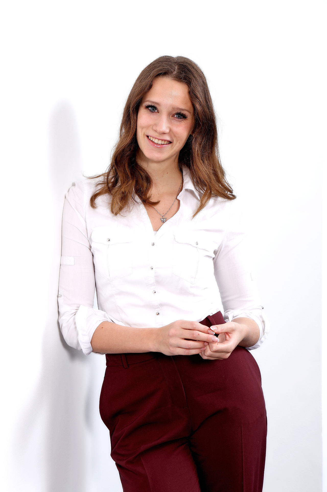

Team alignment session
Clarify direction, roles, responsibilities, and how decisions are made.
Facilitator / team dynamics and Equia
Team dynamics consultant and founder of Equia. She helps teams build the foundations for high performance: clear responsibilities, open communication, and a shared direction.

When a team is growing, responsibilities overlap, important conversations are avoided, and people are working hard but not always toward the same priorities.
Clarify direction, roles, responsibilities, and how decisions are made.
Work on open communication, feedback, and conversations that usually get pushed aside.
Result
After the work, the team better understands where it is going, who is responsible for what, and how to act when priorities shift, communication gets difficult, or decisions need to be made.